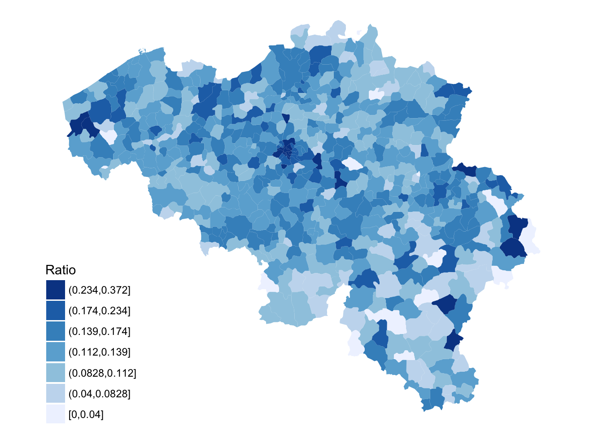

The project below describes parts of my Master’s thesis to obtain my degree in Actuarial Science and Mathematical Finance. The thesis was nominated for the Johan de Witt award for best actuarial thesis in 2016.
Learning practical data science (as opposed to theoretical, academic topics) requires the ability to take a dataset, wrangle it into shape, and use visualization techniques to find insights. Therefore it is essential to obtain a solid foundation in two core skill areas:
In practical terms, this means that as an R user, you should know ggplot2 and dplyr. Also learning a few other parts of the tidyverse, like tidyr, and lubridate, is recommended. The tidyverse is a set of packages that work in harmony because they share common data representations. It is powerful for wrangling, visualizing, and analyzing data.
This project shows how these two core skills are applied to a large motor insurance portfolio from a Belgian non-life insurer. It contains parts of my master’s thesis.
First things first: we need to get the data and hammer it into shape.
First, we need to get the data. Import it using the readr package:
library(readr)
mtpl_data_1997 <- read_delim("mtpl_data_1997.txt", "\t",
escape_double = FALSE,
trim_ws = TRUE,
progress = FALSE)After reading in the data, we’ll examine the data using glimpse().
This will give us the names of the columns, the dimensions of the data, and will print out the first several observations. It is important to routinely examine your data after you change it. Essentially, as you execute a procedure, you want to make sure that the procedure did what you wanted it to.
# INSPECT
glimpse(mtpl_data_1997)## Observations: 163,660
## Variables: 9
## $ NCLAIMS <int> 1, 0, 0, 0, 1, 0, 1, 0, 0, 1, 0, 0, 0, 0, 0, 0, 0, 0,...
## $ DURATION <int> 365, 365, 365, 365, 17, 365, 365, 147, 365, 365, 89, ...
## $ AGEPH <dbl> 50, 64, 60, 77, 28, 26, 26, 58, 43, 70, 34, 37, 34, 4...
## $ AGEC <int> 12, 3, 10, 15, 7, 12, 8, 14, 6, 2, 7, 4, 11, 15, 5, 8...
## $ POWER <int> 77, 66, 70, 57, 70, 70, 55, 47, 65, 76, 102, 66, 58, ...
## $ SPORT <int> 2, 2, 2, 2, 2, 2, 2, 2, 2, 2, 2, 2, 2, 2, 1, 2, 2, 2,...
## $ CODPOSS <int> 1000, 1000, 1000, 1000, 1000, 1000, 1000, 1000, 1030,...
## $ TOWN <chr> "BRUSSEL", "BRUSSEL", "BRUSSEL", "BRUSSEL", "BRUSSEL"...
## $ MAKE <chr> "ALFA ROMEO 33 1.5 TI", "ALFA ROMEO 145 1.4I", "ALFA ...The data set at hand consists of 163,660 records concerning a Belgian motor thirdparty liability (MTPL hereafter) insurance portfolio. All the observations relate to the year 1997.
Next, we’re going to rename our variables by transforming them all to lower case. In programming, there are several different style conventions, but many people will tell you that there’s no good reason to have a capitalized first letter for a variable name. In most situations, you’ll want to remove capitals, if for no other reason than it makes them easier to type.
To execute this, we’re going to use colnames() and tolower(). Here, we’re using the pipe operator (%>%) to ‘pipe’ the names into tolower(). The pipe operator can be read as ‘and then’.
#LOWER CASE
colnames(mtpl_data_1997) <- colnames(mtpl_data_1997) %>% tolower()
#INSPECT
colnames(mtpl_data_1997)## [1] "nclaims" "duration" "ageph" "agec" "power" "sport"
## [7] "codposs" "town" "make"To explore the data we create histograms and choropleth maps.
To obtain insights in the distribution of the data on the policyholder’s level, histograms are created for the age of the policyholder, age of the vehicle, and power of the vehicle, using the ggplot2 library in R.
# LOAD LIBRARIES
library(ggplot2)
library(ggthemes)
# CREATE HISTOGRAMS
ageph_histogram <- ggplot(data = mtpl_data_1997, aes(x = ageph)) +
geom_histogram(aes(y = ..density..), bins = 79, fill = "dodgerblue") +
scale_x_continuous(breaks = extended_range_breaks()(mtpl_data_1997$ageph)) +
ylab("Density") + xlab("Age policyholder (years)") +
theme_bw() #theme with a white background
agec_histogram <- ggplot(data = mtpl_data_1997, aes(x = agec)) +
geom_histogram(aes(y = ..density..), bins = 50, fill = "dodgerblue") +
scale_x_continuous(breaks = extended_range_breaks()(mtpl_data_1997$agec)) +
ylab("Density") + xlab("Age vehicle (years)") + theme_bw()
power_histogram <- ggplot(data = mtpl_data_1997, aes(x = power)) +
geom_histogram(aes(y = ..density..), bins = 70, fill = "dodgerblue") +
scale_x_continuous(breaks = extended_range_breaks()(mtpl_data_1997$ageph)) +
ylab("Density") + xlab("Power vehicle (kW)") + theme_bw()Use ggplot2 with plotly to obtain interactive ggplot2 charts:
# LOAD LIBRARY
library(plotly)
# CREATE INTERACTIVE GGPLOT2 CHARTS
ggplotly(ageph_histogram)ggplotly(agec_histogram)ggplotly(power_histogram)To obtain better insights in the overall geographic patterns of the number of claims per municipality in Belgium, choropleth maps are used. A choropleth map is a thematic map in which areas are shaded or patterned in proportion to the measurements of the statistical variable being displayed on the map.
# LOAD LIBRARY
library(dplyr)
# SUMMARIZE NUMBER OF CLAIMS AND EXPOSURE PER POSTAL CODE
nclaims_per_codposs <- mtpl_data_1997 %>%
group_by(codposs) %>%
summarize(nclaims = sum(nclaims), exposure = n()) %>%
mutate(claim_ratio = round(nclaims / exposure, 3))
#INSPECT
glimpse(nclaims_per_codposs)## Observations: 583
## Variables: 4
## $ codposs <int> 1000, 1030, 1040, 1050, 1060, 1070, 1080, 1081, 10...
## $ nclaims <int> 235, 184, 110, 139, 81, 214, 167, 21, 30, 32, 70, ...
## $ exposure <int> 1181, 928, 433, 643, 345, 1042, 736, 128, 193, 223...
## $ claim_ratio <dbl> 0.199, 0.198, 0.254, 0.216, 0.235, 0.205, 0.227, 0...The spatial object on the municipality level is obtained from the Global Administrative Areas (GADM) database (http://www.gadm.org) in a R (SpatialPolygonsDataFrame) format.
#install.packages("gpclib", type = "source")
library(gpclib)
library(rgeos)
gpclibPermit() #turn on the license
belgium_shapefile <- readRDS("BEL_adm4.rds") #load shapefile
belgie_fortify0 <- fortify(belgium_shapefile, region = "NAME_4") Make sure to remove all unwanted characters.
library(gsubfn)
#LIST OF UNWANTED PUNCTUATION MARKS
unwanted_array <- list('Š'='S', 'š'='s', 'Ž'='Z', 'ž'='z', 'À'='A', 'Á'='A', 'Â'='A',
'Ã'='A', 'Ä'='A', 'Å'='A', 'Æ'='A', 'Ç'='C', 'È'='E', 'É'='E',
'Ê'='E', 'Ë'='E', 'Ì'='I', 'Í'='I', 'Î'='I', 'Ï'='I', 'Ñ'='N',
'Ò'='O', 'Ó'='O', 'Ô'='O', 'Õ'='O', 'Ö'='O', 'Ø'='O', 'Ù'='U',
'Ú'='U', 'Û'='U', 'Ü'='U', 'Ý'='Y', 'Þ'='B', 'ß'='Ss','à'='a',
'á'='a', 'â'='a', 'ã'='a', 'ä'='a', 'å'='a', 'æ'='a', 'ç'='c',
'è'='e', 'é'='e', 'ê'='e', 'ë'='e', 'ì'='i', 'í'='i', 'î'='i',
'ï'='i', 'ð'='o', 'ñ'='n', 'ò'='o', 'ó'='o', 'ô'='o', 'õ'='o',
'ö'='o', 'ø'='o', 'ù'='u', 'ú'='u', 'û'='u', 'ý'='y', 'ý'='y',
'þ'='b', 'ÿ'='y')
#ELIMINATING PUNCTUATION MARKS IN MUNICIPALITY NAMES
belgie_fortify <- belgie_fortify0 %>%
mutate(id = gsubfn(paste(names(unwanted_array), collapse = '|'), unwanted_array, toupper(id))) library(classInt)
library(ggmap)
#fisher jenks breaks function
fisher7 <- function(data){
classIntervals(data, n=7, style='fisher', intervalClosure='right')[[2]]
}The above functions are used:
finaldata00 <- readRDS("finaldata.rds") #combination of data frames: inwoners, inkomen, data1997, zipcodes and verkeer
belgieDat <- readRDS("belgieDat.rds")
finaldata <- finaldata00 %>%
left_join(., belgieDat) %>%
arrange(ID_4)## Joining, by = "GEMEENTE"colnames(finaldata) <- colnames(finaldata) %>% tolower()
glimpse(finaldata)## Observations: 589
## Variables: 19
## $ niscode <int> 21001, 21004, 21009, 21005, 21006, 21008, ...
## $ gemeente <chr> "ANDERLECHT", "BRUSSEL", "ELSENE", "ETTERB...
## $ totaalbevolking <int> 107912, 163210, 82202, 45257, 36492, 23059...
## $ dichtheidperkm2 <dbl> 6081.5646, 5005.5318, 12956.1657, 14370.39...
## $ oppervlaktekm2 <dbl> 17.744118, 32.605926, 6.344624, 3.149323, ...
## $ codposs <int> 1070, 1000, 1050, 1040, 1140, 1083, 1090, ...
## $ lengtekm <dbl> 184.81, 384.78, 96.70, 54.50, 59.91, 28.90...
## $ miljvoertuigkm <dbl> 444.64, 890.99, 175.00, 129.50, 118.71, 63...
## $ mediaaninkomen1000 <dbl> 17.244, 17.080, 18.161, 19.423, 20.096, 19...
## $ welvaartsindex <int> 68, 71, 87, 82, 79, 90, 86, 73, 106, 66, 9...
## $ nclaims <dbl> 214, 235, 139, 110, 76, 32, 70, 21, 56, 18...
## $ exp <dbl> 899.83014, 970.71781, 524.61644, 357.29041...
## $ indirect.prediction <dbl> 125.37289, 135.24964, 73.09455, 49.78110, ...
## $ indirect.sir <dbl> 1.7069081, 1.7375278, 1.9016465, 2.2096740...
## $ ratio.nclaims.exp <dbl> 0.2378227, 0.2420889, 0.2649555, 0.3078728...
## $ index <int> 309, 312, 317, 313, 314, 316, 318, 319, 31...
## $ road.density <dbl> 10.415282, 11.800922, 15.241250, 17.305307...
## $ traffic.density.st <dbl> 1.172708056, 2.966545943, 0.089050729, -0....
## $ id_4 <dbl> 1, 2, 3, 4, 5, 6, 7, 8, 9, 10, 11, 12, 13,...Now the functions are used:
#add both vectors to the original data set
finaldata0 <- finaldata %>%
mutate(ratio.nclaims.exp.cut = cut(ratio.nclaims.exp,
breaks = fisher7(ratio.nclaims.exp),
include.lowest = TRUE)) %>%
mutate(nclaims.cut = cut(nclaims, breaks = fisher7(nclaims), include.lowest = TRUE)) %>%
mutate(exp.cut = cut(exp, breaks = fisher7(exp), include.lowest = TRUE, dig.lab = 4))
colnames(finaldata0) <- colnames(finaldata0) %>% tolower()
colnames(belgie_fortify) <- colnames(belgie_fortify) %>% tolower()
#merge this with shapefile to plot the map
belgie_fortify0 <- left_join(belgie_fortify, finaldata0)## Joining, by = "gemeente"Create map:
#transparent legend
transparent_legend = theme(
legend.background = element_rect(fill = "transparent"),
legend.key = element_rect(fill = "transparent", color = "transparent")
)
#function to plot maps
map_belgium_disc <- function(data, mapping, naam, palette) {
ggplot(data, aes(x = long, y = lat, group = group)) + #data should be object produced by fortify function
geom_polygon(mapping) + #choose which categorized variable should be plotted
scale_fill_manual(name = naam, values = palette) +
coord_map() + #uses Mercator projection as default
theme_nothing(legend = TRUE) + #to get rid of everything
theme(legend.justification = c(0,0), legend.position = c(0,0)) + #put legend in left corner
guides(fill = guide_legend(reverse = TRUE)) + #reverse legend colors
transparent_legend
}
#CREATES NICE LOOKING COLOR PALETTES ESPECIALLY FOR THEMATIC MAPS
library(RColorBrewer)
#BLUES PALETTE WITH SEVEN COLORS
blues7 <- brewer.pal(7, 'Blues')
#CREATE MAP
map_belgium_disc(belgie_fortify0, aes(fill = ratio.nclaims.exp.cut), "Ratio", palette = blues7)
It is observed that in the Brussels-Capital Region many municipalities exist with higher ratios compared to the nation-wide average.